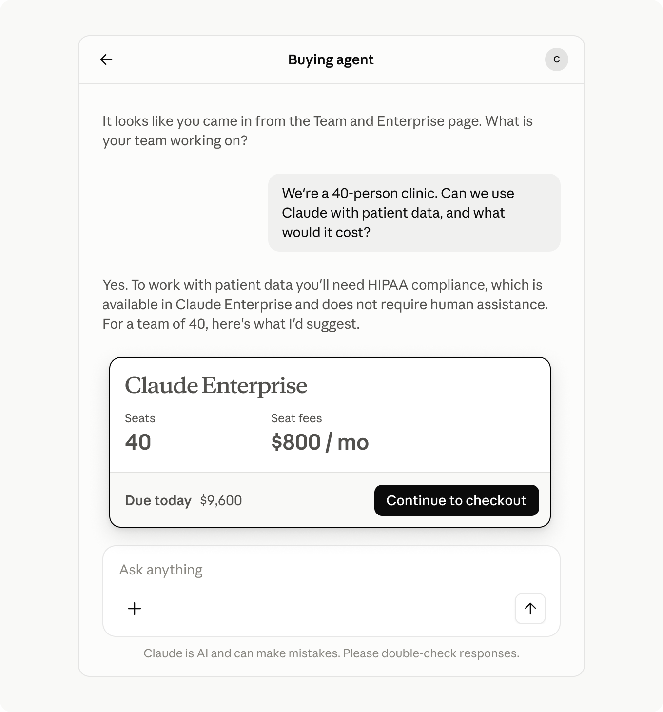
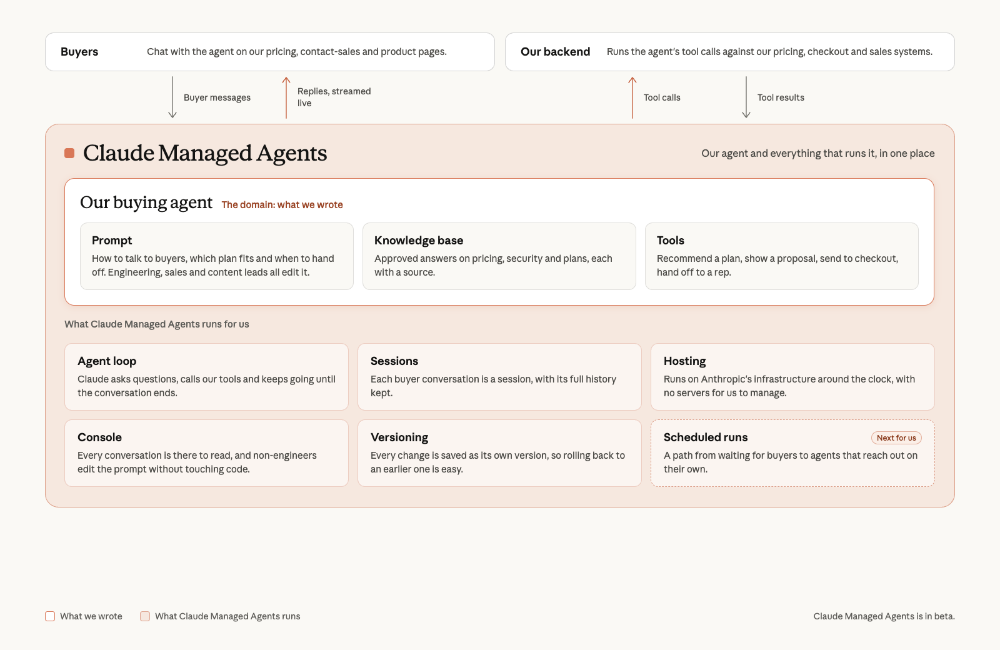

Anthropic의 영업 개발(sales development) 리더 Carl Johnson이, Claude 기반 구매 에이전트(buying agent)가 이제 인바운드 고객 대부분에게 답하게 된 과정과 그것이 우리 영업팀의 일하는 방식을 어떻게 바꿨는지 이야기합니다.
영업 리더로서 인정하기 괴로운 일이지만, 얼마 전까지만 해도 회사에서 Claude를 도입하려는 분들은 필요한 답을 충분히 빨리 받지 못하고 있었습니다. Contact Sales 폼을 작성하고 나서도 답을 듣기까지 너무 오래, 때로는 며칠씩 기다려야 했습니다. 질문 대부분은 단순했습니다. 플랜 가격이 얼마인지, 최소 좌석(seat) 수가 있는지, HIPAA 계약 요건을 충족할 수 있는지 같은 것들이었죠. 답은 우리 문서와 지원 문서에 이미 있었지만, 고객은 누군가 빠르게 안내해 주길 원했습니다.
그래서 우리는 Claude Managed Agents(베타)로 구매 에이전트를 만들었습니다. 잠재 고객을 "우리 회사에 Claude를 도입하고 싶다"는 단계에서 구매 완료까지 데려가는 에이전트입니다. 구매 에이전트는 이제 하루에 수천 건의 대화를 나누며, 고객의 가장 급한 질문에 답하고, 결제(checkout)까지 안내합니다. 에이전트가 우리 팀에 넘기는(escalate) 고객은 이미 충분히 이해한 상태로, 구매 결정을 내릴 준비가 더 잘 되어 있습니다. 이들은 예전 폼으로 들어온 리드(lead)보다 두 배 넘게 자주 영업 기회(opportunity)로 전환되고, 계약 성사(close)도 약 5일 빠릅니다. 우리는 이 경험을 의도적으로 옵트인(opt-in)으로 남겨 두었습니다. 즉 고객이 처음에 자신의 선호에 따라 에이전트와 이야기할지, 영업 담당자(sales rep)와 이야기할지 직접 선택합니다.
구매 에이전트를 만들기 전 우리 인바운드 프로세스는 꽤 단순했습니다. 구매자가 폼을 작성합니다. 리드는 비즈니스 개발 담당자(BDR)에게 라우팅되고, 담당자가 자격을 심사(qualify)한 뒤 어카운트 임원(account executive)에게 넘깁니다. 팀이 제품에 관심 있는 모든 사람과 이야기할 수 있을 때는 이 방식이 여전히 잘 작동합니다.
하지만 우리는 매달 수만 건의 인바운드 요청을 받았고, 인바운드 BDR 팀은 이를 감당할 수 없었습니다. 담당자들은 문서에 이미 나와 있는 질문에 답하느라 하루를 보냈고, 대기열에 있는 모든 고객에게 닿을 효과적인 방법이 없었습니다. 이것은 우리가 고객에게 주고 싶은 경험이 아니었습니다.
우리는 모든 고객이 어느 시간에든, 어떤 언어로든 제대로 아는 답을 받고, 원하는 방식대로 구매할 수 있길 바랐습니다. 그리고 그 방식은 종종 영업 담당자와 이야기하지 않는 것을 뜻합니다. 담당자들은 결과의 방향을 바꿀 수 있는 대화에 시간을 쓰길 바랐습니다.
우리는 고객이 이미 질문을 던지고 있던 곳에 에이전트를 배치했습니다. Contact Sales 페이지와 요금(Pricing) 페이지, 제품 안, 그리고 이메일입니다. 어떤 고객이든 Claude.ai 제품 안에서 구매 에이전트를 찾을 수 있습니다. 어떤 플랜이 가장 잘 맞는지 이해하도록 돕는 단순한 채팅 경험입니다. 고객이 팀에 필요한 것을 설명하면 에이전트가 몇 가지 후속 질문을 던지고, 가격·보안·데이터에 관한 질문에 답한 뒤 플랜과 좌석 수를 추천합니다. 각 대화는 세 가지 중 하나로 끝납니다.
우리는 에이전트가 영업 담당자와 같은 일을 따라가도록 만들었습니다. 즉 고객이 해결하려는 문제가 무엇인지, 현재 Claude 사용 현황은 어떤지, 우리가 어떻게 가장 잘 도울 수 있는지를 이해하는 것입니다.

내부적으로 구매 에이전트는 단순합니다. 프롬프트 하나, 도구(tool) 몇 개, 그리고 Claude Managed Agents 위에서 돌아가는 Claude가 전부입니다. 플랫폼이 호스팅, 세션 관리, 도구 오케스트레이션을 맡아 주기 때문에, 엔지니어들은 인프라를 만드는 대신 영업팀과 함께 구매 경험을 설계하는 데 시간을 썼습니다.
우리가 최종적으로 Managed Agents를 선택한 이유는 다음과 같습니다.

에이전트는 이제 하루 24시간 수천 건의 대화를 나눕니다. 고객은 예약된 통화를 기다리거나 며칠에 걸쳐 이메일을 주고받는 대신 즉시 답을 얻습니다. 실제로 많은 고객이 사람보다 에이전트와 이야기하는 쪽을 선호합니다. 질문이 떠오를 때마다 빠르고 정확한 답을 주기 때문입니다. 새로운 셀프서비스 Enterprise 고객 중 다수가 구매 전에 구매 에이전트와 대화했고, 미리 에이전트와 이야기한 고객이 자신이 무엇을 사는지 더 잘 이해하고 있다는 것을 확인했습니다.
에이전트는 담당자들이 하루를 보내는 방식을 바꿨습니다. 이제 팀의 시간과 에너지 대부분을 구매 여정의 더 이른 단계에서 고객을 교육하고, 실시간 고객 대화를 더 많이 나누고, 이벤트 현장에서 직접 시간을 보내는 데 집중할 수 있게 되었습니다.
가장 큰 변화는 담당자들이 이제 더 잘 준비된 리드를 받고, 예전 문의 폼보다 리드를 영업 기회로 더 자주 전환하며, 계약을 약 5일 더 빨리 성사시킨다는 점입니다. 담당자는 고객이 무엇을 원하는지, 어떤 안내를 이미 받았는지, 우리가 어떻게 가장 잘 도울 수 있는지 이미 아는 상태로 대화를 시작합니다.
예를 들어 내부 영업 담당자 중 한 명인 Ojas는 예전에는 거래 하나를 성사시키는 데 이메일 약 10통을 주고받았지만, 지금은 6통 정도면 됩니다. 구매 에이전트 출시 이후 성사 거래(closed won) 산출을 2.5배로 늘렸는데, 이미 충분히 이해하고 준비된 채로 마지막 한 걸음만 도움이 필요한 고객에게 집중할 수 있게 된 덕분입니다.
얼마 전까지 인바운드는 우리 팀이 따라잡을 수 없는 대기열이었습니다. 지금은 어떤 구매자든 어느 시간에나 시작할 수 있는 대화이고, 담당자들은 시간을 더 효율적으로 씁니다. 구매 에이전트는 고객 관계 전반에 걸친 에이전트를 향한 우리의 첫걸음입니다.
직접 만들어 볼 준비가 되셨나요? Claude Managed Agents에 대해 더 알아보거나, 여러분의 영업 활동에 에이전트를 도입하는 것에 관해 우리 팀과 상담하세요.
이 글은 Carl Johnson이 썼으며 Izzy Lee, Bobby P., Lina Ochman, Yana Gevorgyan, Jerico Johns, Taylre Duarte가 기여했습니다.